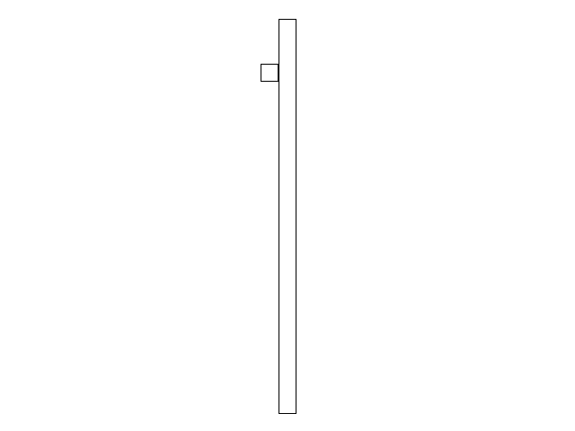
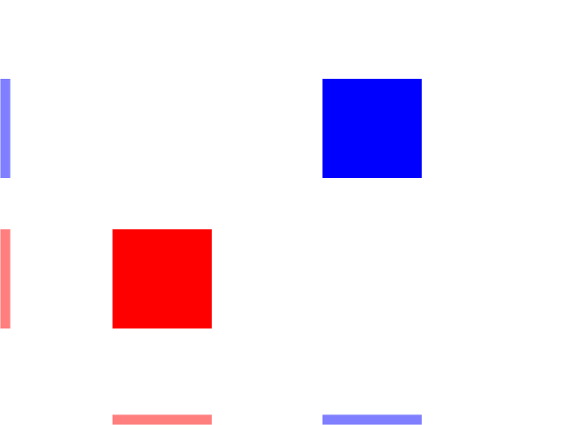
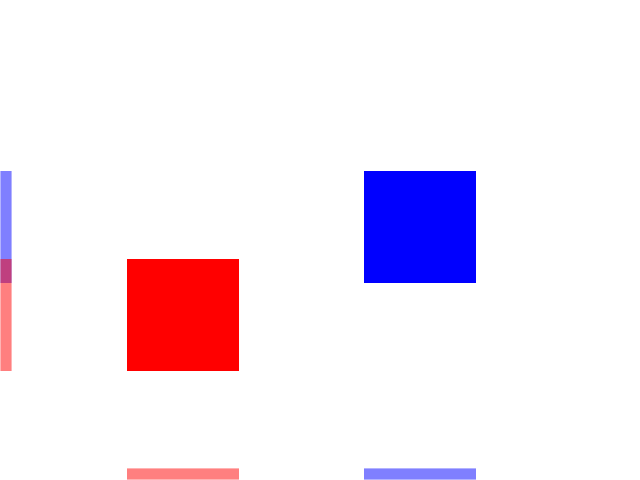
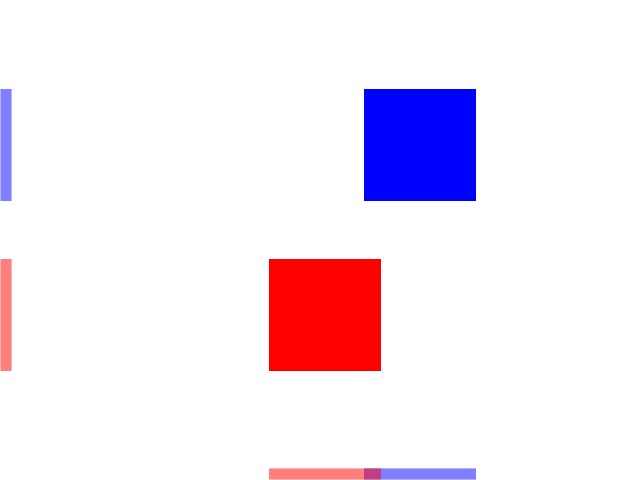
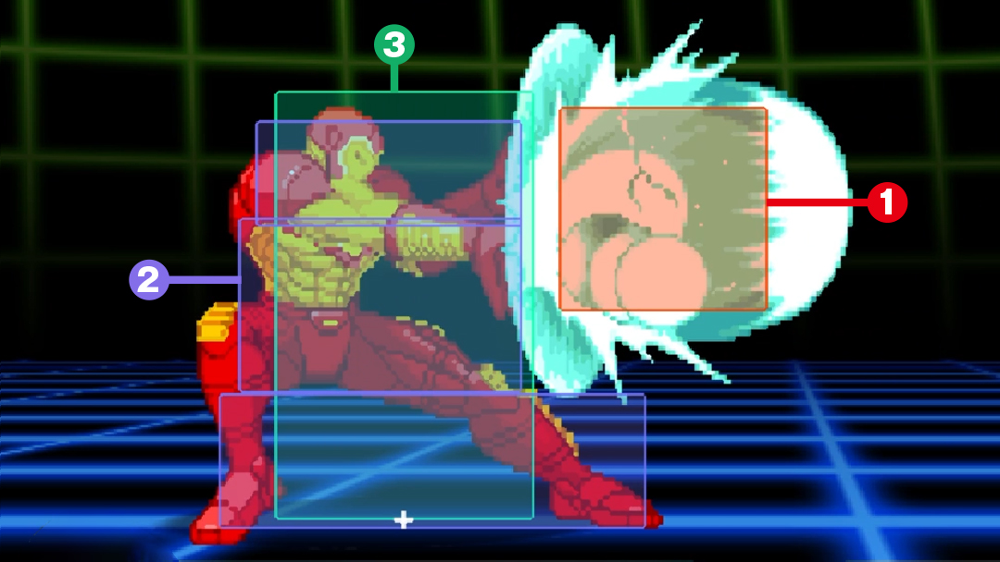

Collision Detection

Last Updated: Jun 8th, 2025
If you want to tell if two objects are touching, using collision boxes is a common way to do so. Here we'll be checking collision between two axis aligned bounding boxes.
Checking collisions between two convex polygons (and boxes are convex polygons) involves checking how they are separated against the axes of their sides.
Here we have two boxes that are not collided. As you can see, their x projections are on the bottom and their y projections are on the left:
Here you see the boxes have collided along the y axis but they are separated on the x axis:
Here the boxes are collided on the x axis but they are separated on the y axis:
When there is no separation on any of the axes there is a collision:
This is called the separating axis test where we try to find an axis where the polygons are separated. If there is no separating axis, then the objects are colliding.
In this tutorial we're doing the most basic type of separating axis test: between to axis aligned bounding boxes (knowns a AABBs). Bounding boxes are boxes that encapsulate an object and they are axis aligned because their side go along the x and y axis (as opposed to oriented bounding boxes which are rotated).
Here we have two boxes that are not collided. As you can see, their x projections are on the bottom and their y projections are on the left:

Here you see the boxes have collided along the y axis but they are separated on the x axis:

Here the boxes are collided on the x axis but they are separated on the y axis:

When there is no separation on any of the axes there is a collision:
This is called the separating axis test where we try to find an axis where the polygons are separated. If there is no separating axis, then the objects are colliding.
In this tutorial we're doing the most basic type of separating axis test: between to axis aligned bounding boxes (knowns a AABBs). Bounding boxes are boxes that encapsulate an object and they are axis aligned because their side go along the x and y axis (as opposed to oriented bounding boxes which are rotated).
class Square
{
public:
//The dimensions of the square
static constexpr int kSquareWidth = 20;
static constexpr int kSquareHeight = 20;
//Maximum axis velocity of the square
static constexpr int kSquareVel = 10;
//Initializes the variables
Square();
//Takes key presses and adjusts the square's velocity
void handleEvent( SDL_Event& e );
//Moves the square
void move( SDL_Rect collider );
//Shows the square on the screen
void render();
private:
//The collision box
SDL_Rect mCollisionBox;
//The velocity of the square
int mVelX, mVelY;
};
We have our Square class that functions a lot like our Dot class only its movement function takes in a collision box to check collision against when moving and it has an SDL_Rect collision box that also holds its position.
/* Function Prototypes */ //Starts up SDL and creates window bool init(); //Loads media bool loadMedia(); //Frees media and shuts down SDL void close(); //Check collision between two AABBs bool checkCollision( SDL_Rect a, SDL_Rect b );
We have a new function we're using to check collisions between two collision boxes.
SDL3 does have functions that can help with collision detection, but you should know how to do it manually as it is a very common interview question.
SDL3 does have functions that can help with collision detection, but you should know how to do it manually as it is a very common interview question.
//Square Implementation
Square::Square():
mCollisionBox{ 0, 0, kSquareWidth, kSquareHeight },
mVelX{ 0 },
mVelY{ 0 }
{
}
void Square::handleEvent( SDL_Event& e )
{
//If a key was pressed
if( e.type == SDL_EVENT_KEY_DOWN && e.key.repeat == 0 )
{
//Adjust the velocity
switch( e.key.key )
{
case SDLK_UP: mVelY -= kSquareVel; break;
case SDLK_DOWN: mVelY += kSquareVel; break;
case SDLK_LEFT: mVelX -= kSquareVel; break;
case SDLK_RIGHT: mVelX += kSquareVel; break;
}
}
//If a key was released
else if( e.type == SDL_EVENT_KEY_UP && e.key.repeat == 0 )
{
//Adjust the velocity
switch( e.key.key )
{
case SDLK_UP: mVelY += kSquareVel; break;
case SDLK_DOWN: mVelY -= kSquareVel; break;
case SDLK_LEFT: mVelX += kSquareVel; break;
case SDLK_RIGHT: mVelX -= kSquareVel; break;
}
}
}
As you can see the constructor and event handling is mostly unchanged from the Dot to the Square.
void Square::move( SDL_Rect collider )
{
//Move the square left or right
mCollisionBox.x += mVelX;
//If the square went off screen or hit the wall
if( ( mCollisionBox.x < 0 ) || ( mCollisionBox.x + kSquareWidth > kScreenWidth ) || checkCollision( mCollisionBox, collider ) )
{
//Move back
mCollisionBox.x -= mVelX;
}
//Move the square up or down
mCollisionBox.y += mVelY;
//If the square went off screen or hit the wall
if( ( mCollisionBox.y < 0 ) || ( mCollisionBox.y + kSquareHeight > kScreenHeight ) || checkCollision( mCollisionBox, collider ) )
{
//Move back
mCollisionBox.y -= mVelY;
}
}
When we move, we check if the box went out of bounds and we also check if it collided with the wall. If it does, we undo the motion.
void Square::render()
{
//Show the square
SDL_FRect drawingRect{ static_cast<float>( mCollisionBox.x ), static_cast<float>( mCollisionBox.y ), static_cast<float>( mCollisionBox.w ), static_cast<float>( mCollisionBox.h ) };
SDL_SetRenderDrawColor( gRenderer, 0x00, 0x00, 0x00, 0xFF );
SDL_RenderRect( gRenderer, &drawingRect );
}
To draw our square, we call SDL_RenderRect. If you're wondering we convert the
SDL_Rect to an SDL_FRect for rendering as opposed to just using an SDL_FRect for everything, the answer is
floating point errors. float datatypes are not precise, and if you were to add 0.1f ten times, checked if it was equal 1.f, you would get false. To not deal with that (because dealing with floating point errors is a another can of worms), we're using an integer rectangle
for motion.
bool checkCollision( SDL_Rect a, SDL_Rect b )
{
//Calculate the sides of rect A
int aMinX{ a.x };
int aMaxX{ a.x + a.w };
int aMinY{ a.y };
int aMaxY{ a.y + a.h };
//Calculate the sides of rect B
int bMinX{ b.x };
int bMaxX{ b.x + b.w };
int bMinY{ b.y };
int bMaxY{ b.y + b.h };
To do the separating axis test we first have to find the minimum x value (the left side), the maximum x value (the right side), the minimum y value (the top side because remember the y axis is inverted), and the maximum y value (the bottom side) for both of the collision boxes.
//If left side of A is the the right of B
if( aMinX >= bMaxX )
{
return false;
}
//If the right side of A to the left of B
if( aMaxX <= bMinX )
{
return false;
}
}
Here we're checking for separation along the x axis. If the left side of A is to the right of B or the right side of A is to the left of B it means they're are separated along the x axis.
//If the top side of A is below B
if( aMinY >= bMaxY )
{
return false;
}
//If the bottom side of A is above B
if( aMaxY <= bMinY )
{
return false;
}
//If none of the sides from A are outside B
return true;
}
Now we're checking for separation along the y axis. If the top side of A is below B or the bottom side of A is above B it means they're are separated along the y axis.
If there is no separation along either the x or y axis, we return true because they must be colliding.
If there is no separation along either the x or y axis, we return true because they must be colliding.
//The quit flag
bool quit{ false };
//The event data
SDL_Event e;
SDL_zero( e );
//Timer to cap frame rate
LTimer capTimer;
//Square we will be moving around on the screen
Square square;
//The wall we will be colliding with
constexpr int kWallWidth = Square::kSquareWidth;
constexpr int kWallHeight = kScreenHeight - Square::kSquareHeight * 2;
SDL_Rect wall{ ( kScreenWidth - kWallWidth ) / 2, ( kScreenHeight - kWallHeight ) / 2, kWallWidth, kWallHeight };
Before going into the main loop, we declare our square and place the wall we'll be colliding against.
//The main loop
while( quit == false )
{
//Start frame time
capTimer.start();
//Get event data
while( SDL_PollEvent( &e ) == true )
{
//If event is quit type
if( e.type == SDL_EVENT_QUIT )
{
//End the main loop
quit = true;
}
//Process square events
square.handleEvent( e );
}
//Update square
square.move( wall );
//Fill the background
SDL_SetRenderDrawColor( gRenderer, 0xFF, 0xFF, 0xFF, 0xFF );
SDL_RenderClear( gRenderer );
//Render wall
SDL_FRect drawingRect{ static_cast( wall.x ), static_cast( wall.y ), static_cast( wall.w ), static_cast( wall.h ) };
SDL_SetRenderDrawColor( gRenderer, 0x00, 0x00, 0x00, 0xFF );
SDL_RenderRect( gRenderer, &drawingRect );
//Render square
square.render();
//Update screen
SDL_RenderPresent( gRenderer );
//Cap frame rate
constexpr Uint64 nsPerFrame = 1000000000 / kScreenFps;
Uint64 frameNs{ capTimer.getTicksNS() };
if( frameNs < nsPerFrame )
{
SDL_DelayNS( nsPerFrame - frameNs );
}
}
As you can see, we put the event handler in the event loop, update the square's motion before beginning rendering, and then clear the screen, draw the wall, and then draw the square.
You maybe asking "well what if I want to check collisions with objects that aren't square". There are way to check collisions with shapes that aren't rectanges (some of which we'll be covering in future tutorials), and there are volumes written on the subject of checking collisions
with different shapes, but you can get pretty far with just AABBs.
Collision volumes do not have to perfectly match the objects they're representing. The recently released Marvel vs. Capcom Fighting Collection has the option to view collision boxes:
As you can see, the collision volumes just have to be close enough. Besides, the more complex the collision geometry, the more computationally expensive it is to handle it. You have to ask yourself if the additional accuracy is worth the cost.
Oh, and it wouldn't be a bad idea to take a look at the game loops article because as your game loops start becoming more complex, knowing how to order your logic properly is important.
Collision volumes do not have to perfectly match the objects they're representing. The recently released Marvel vs. Capcom Fighting Collection has the option to view collision boxes:

As you can see, the collision volumes just have to be close enough. Besides, the more complex the collision geometry, the more computationally expensive it is to handle it. You have to ask yourself if the additional accuracy is worth the cost.
Oh, and it wouldn't be a bad idea to take a look at the game loops article because as your game loops start becoming more complex, knowing how to order your logic properly is important.
Addendum: Generic polygon separating axis test
You maybe be asking "What if I want to rotate my boxes?". The fact is, the separating axis test works mostly the same for rotated boxes (known as oriented bounding boxes or OBBs).
Instead of finding the min/max x/y values for each of the boxes, you find the min/max i/j values for each of the boxes. You will have a set of min/max i/j values for the A box and min/max i/j values for the B box. You figure out these values by projecting the center point of each side onto the i/j axis for both box A and B. Then you check of the boxes are separating on the Ai, Aj, Bi, or Bj axis. If there is no separation, the boxes are collided. For any convex polygon, it's basically the same story. Each side of each polygon is an axis the separating axis needs to be checked against.
If all of this is going over your head, it's because this all involves vector math which they will teach you in your first semester physics class or multivariable calculus class. As mentioned before, this is beyond the scope of this tutorial set.
Instead of finding the min/max x/y values for each of the boxes, you find the min/max i/j values for each of the boxes. You will have a set of min/max i/j values for the A box and min/max i/j values for the B box. You figure out these values by projecting the center point of each side onto the i/j axis for both box A and B. Then you check of the boxes are separating on the Ai, Aj, Bi, or Bj axis. If there is no separation, the boxes are collided. For any convex polygon, it's basically the same story. Each side of each polygon is an axis the separating axis needs to be checked against.
If all of this is going over your head, it's because this all involves vector math which they will teach you in your first semester physics class or multivariable calculus class. As mentioned before, this is beyond the scope of this tutorial set.
Addendum: This code is badly structured and why you need to learn to how to write bad code
I have to say that this code is noticably bad. Let's go over what's wrong with it.
1) The class structure. If this was a real game engine, it would be structured something like this:
2) How the collisions are handled. Here we're checking collision and then immediately responding. In a real engine, we would check all the collisions to get all contact data. A contact has information like which two objects are colliding, how much they are penetrating, what direction the collision is in, etc. Only after all the collisions have been detected do you want to start processing them.
3) How the physics are handled. Yes, there is motion so there is technically some form of physics here. Physics/collision logic is usually handled something like this:
However, if you're making a Nasty Tetris Project, this motion/collision detection/collision processing in a single step is just fine. The only object interaction you're really going to have is the player controlled piece against the resting pieces. Just putting all this logic together will let you finish the project sooner and finishing the project quickly is one of your main goals of the project. The fact is as a professional game programmer you will be put in a situations where you can do things right or you can do things quickly.
Let me let you in a big secret: professional game code (yes, even games that won GOTY) is often terrible and filled with issues that would make a first semester computer science student gag. Good code takes time to make and the stories you heard about crunch are true. YAGNI is a very important principle in game development and you will need make decisions on having to trade code quality for finishing things faster. A lot of the time, you just need to get things working as fast as possible.
A lot of the time doing things "properly" involves making the code more flexible but it is possible that you will not need the flexibility. Learning when to do things properly and when to do them quickly is a skill you will need to master. So, yes, to become a professional game programmer you will not only need to know how to make good code you will also need to learn when to make bad code.
1) The class structure. If this was a real game engine, it would be structured something like this:
class GameObject
{
public:
/*yada yada*/
private:
Transform mTransform; //Holds position, rotation, scale
RigidBody mRigidBody; //Hold mass, velocity, etc
Collider mCollider; //Holds the collision box
Graphic mGraphic; //Holds the info for the square we'll be rendering
};
2) How the collisions are handled. Here we're checking collision and then immediately responding. In a real engine, we would check all the collisions to get all contact data. A contact has information like which two objects are colliding, how much they are penetrating, what direction the collision is in, etc. Only after all the collisions have been detected do you want to start processing them.
3) How the physics are handled. Yes, there is motion so there is technically some form of physics here. Physics/collision logic is usually handled something like this:
applyAllForcesToObjects(); //Gravity, wind, propulsion, etc
moveAllObjects(); //Apply acceleration/velocity to position
checkForCollisions(); //Generate all contacts/collisions
processCollisions(); //Resolves all contacts/collisions
However, if you're making a Nasty Tetris Project, this motion/collision detection/collision processing in a single step is just fine. The only object interaction you're really going to have is the player controlled piece against the resting pieces. Just putting all this logic together will let you finish the project sooner and finishing the project quickly is one of your main goals of the project. The fact is as a professional game programmer you will be put in a situations where you can do things right or you can do things quickly.
Let me let you in a big secret: professional game code (yes, even games that won GOTY) is often terrible and filled with issues that would make a first semester computer science student gag. Good code takes time to make and the stories you heard about crunch are true. YAGNI is a very important principle in game development and you will need make decisions on having to trade code quality for finishing things faster. A lot of the time, you just need to get things working as fast as possible.
A lot of the time doing things "properly" involves making the code more flexible but it is possible that you will not need the flexibility. Learning when to do things properly and when to do them quickly is a skill you will need to master. So, yes, to become a professional game programmer you will not only need to know how to make good code you will also need to learn when to make bad code.